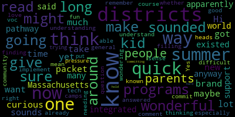
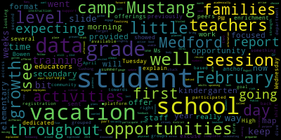

AI-generated transcript of Regular School Committee Meeting - 3.7.2022
English | español | português | 中国人 | kreyol ayisyen | tiếng việt | ខ្មែរ | русский | عربي | 한국인
Back to all transcripts
[Unidentified]: Good evening, everybody. If you can hear me, I'll start the agenda. Dr. Cushing, can you hear me? Great. Thanks, everybody.
[Lungo-Koehn]: Monday, March 7th, 2022, regular meeting, 6.30 p.m. in the Howard F. Alden Memorial Chambers, Medford City Hall. You can also call in by using 1-929-205-6099. Please enter meeting ID. When prompted, 949-9095-6841. Member Ruseau, will you please call the roll?
[Unidentified]: here.
[McLaughlin]: I can't hear you, I can't Brianna.
[Lungo-Koehn]: I'm the same, I can hear member McLaughlin, but nobody else.
[Unidentified]: I'm switching. Mayor, can you hear me? Oh, great. Everybody's here. Mayor, the roll is complete. Mayor, can you hear us now?
[Lungo-Koehn]: Yes, I can.
[Graham]: Okay.
[Lungo-Koehn]: Yep, the roll is called. It seems like I couldn't hear everybody, but I'm assuming everybody's present. Are there any student representatives on the call, Dr. Cushing?
[Cushing]: They are not in the Zoom as of yet.
[Lungo-Koehn]: Thank you. If we all may rise to salute the flag. I pledge allegiance to the flag, the United States of America and to the Republic for which it stands one nation under God, indivisible with liberty and justice for all. We have the consent agenda, approval of bills and payrolls. regular school committee meeting minutes from two 2822.
[Unidentified]: Is there a motion for approval? Second.
[Lungo-Koehn]: Motion for approval seconded by member Rousseau. All those in favor.
[Ruseau]: Hi, Mayor. I think since two of us are remote one, we have to do roll calls for everything.
[Lungo-Koehn]: Okay, roll call, please.
[Ruseau]: Thank you. Member Graham?
[Lungo-Koehn]: Yes.
[Ruseau]: Member Kreatz? Yes. Member Hays? Yes. Member McLaughlin?
[McLaughlin]: Yes.
[Ruseau]: Member Mustone? Yes. Member Ruseau, yes. Mayor Lungo-Koehn.
[Lungo-Koehn]: Yes, 70 affirmative, zero negative. The consent agenda is approved. There is no report of subcommittees. And number five, we have report of the superintendent. Number one is superintendent's updates and comments. Dr. Marice Edouard-Vincent.
[Edouard-Vincent]: Good evening. We meet tonight on the anniversary of bloody Sunday, which took place. March 7 1965 in Selma, Alabama, over 600 people marched in civil rights demonstration that ended in violence as state troopers attack the marchers, as they made their way over the Edmund Pettus bridge. The violence was televised nationwide and led to demonstrations across the nation against this horrific events. The outrage led to the passage of the Voting Rights Act of 1965, which President Johnson said at the time, it is our effort to right that wrong. I mentioned this because we have all heard about various states who are considering bills which could limit voting rights for Americans. We must remain vigilant as voting rights are one of our most sacred rights that we have. As stated in my Friday message, we are seeking interested parents and community members to participate as members of a playground advisory committee. The members of this committee will work with the selected vendor for the design of the McGlynn Middle and Elementary Universally Accessible Playground. This work will allow this group to make recommendations to improve accessibility at the other school playgrounds in Medford. To apply, please see the link on the blog or email drpetercushing at pcushing at medford.k12.ma.us. We have several congratulations in order. Congratulations to the Mustangs Winter Guard who took home first place in its division at the annual home show. The Mustangs competed against over a dozen Winter Guards. They performed using energetic music and a combination of flags, sabers, rifles, and dance that wowed the crowds. Also, congratulations are in order for the Mustang basketball cheerleaders who placed third in the state regional tournament yesterday. They will move on to the state tournament next weekend at Worcester State University. Good luck Mustangs. The Mustang winter sports season is now completed. The boys basketball team made the MIA tournament, losing by five points to Melrose. We applaud all of our winter athletes, girls and boys basketball, girls and boys ice hockey, girls and boys indoor track and gymnastics. We thank them for their dedication and commitment. These teams had to fight through a COVID filled winter season, Still they prevailed. Spring sport tryouts begin March 21st. The high school will be adding boys volleyball and the middle schools will offer flag football and outdoor track. Additionally, I would like to add that I have seen that Medford High School Drama Club practicing for the Legally Blonde musical, which will be presented in early April. A few upcoming events. Medford CPAC hosts their monthly meeting by Zoom this Wednesday, March 9th at 7 p.m. The topic will be declarative language. Also on Wednesday, the Medford Public Schools, collaborating with Medford's Board of Health, will be hosting a free vaccine clinic from 3 to 6 p.m. COVID vaccines and flu shots will be available. An important note, the in-person Building Bridges to Kindergarten has been rescheduled from this Wednesday, March 9th, to next Wednesday, March 16th, from 6.30 to 7.30 p.m. in the library at Medford High School. Also, the Parent Information Center will remain open on the 16th until 6 p.m. for registrations. The Spotlight Theater Company is presenting an adaptive musical theater workshop that began Saturday and will continue on Saturdays until April 30th. There will be a showcase at the end of the workshop. It's open to students aged eight to 18 and for all abilities. For further information, please visit spotlightmedford.com. This coming Sunday, believe it or not, March 13th, is Daylight Savings Time. Don't forget to set your clocks one hour ahead, spring forward. Tomorrow is International Women's Day. When we celebrate women and imagine a gender equal world, free of bias, stereotypes, in a world that is diverse, equitable, and inclusive. Together, let us forge ahead for women's equality. Hashtag break the bias. A very important holiday is coming up on March 17th. And I would like to just recognize our Irish neighbors and members of the community on March 17. It's an opportunity for Irish heritage to be celebrated. And it's St. Patrick's Day. St. Patrick's Day is credited for bringing Christianity to Ireland in the fifth century. We are wishing our Irish neighbors a happy St. Patrick's Day. Also, on March 17th, it is evacuation day. When the British evacuated Boston during the evolutionary war, we do hope that our Ukrainian friends can find hope as they battle for their continued freedom and the pursuit of life. Also, I would like to share on March 18th, our Hindu neighbors will be celebrating Holi, a religious festival of colors. It celebrates the triumph of good over evil and the changing of the seasons from winter to spring. Let me take this opportunity to extend best wishes to our Hindu families for a happy and healthy Holi. Finally, in closing, I say as your proud superintendent, that the horror of war that we are seeing right now and the unchecked aggression that is on display as the world observes the Russian invasion of Ukraine. It is so important that we all remember our Ukrainian neighbors and pray for peace. This past Friday, our high school CCSR produced a wonderful show of support for Ukraine. Our students gave great speeches. Everyone who attended braved the bitter cold. I wanna thank our parents and community members who came out to support the event and many, many students. I would like to thank Senator Pat Jalen and school committee member Paul Russo for attending. For those in our community who might be interested in helping the Ukrainian people, Donations are being accepted by UNICEF. Additionally, McGlynn Middle School students, CCSR students, are collecting first aid items, such as Band-Aids, gauze, medical supplies, scissors, antibiotic creams, Tylenol, Advil, flashlights, batteries, all kinds of toiletries, such as deodorant, toothpaste, and toothbrushes. and books. That collection will be taking place until March 11. I would also like to extend a very special thank you to Mr. Christopher Donovan, a community friend and partner of Medford High School. He came to campus and set up all of the blue and gold lights. We want to thank the city's DPW department for coming out Friday night and providing additional lighting and our custodians, everyone working together to make Friday evening's event a successful event. Thank you. And those are my remarks for this evening.
[Graham]: Thank you, superintendent. Item number two is a COVID update from the assistant superintendent of finance and operations, David Murphy and Avery Hines, the director of health services. They'll report on the operational updates and pending COVID shifts in Medford Public Schools. Mr. Murphy?
[Murphy]: Thank you, Mr. Graham. Good evening, members of the committee. This will be a very short COVID update as we, as you know, met just last week and covered a variety of COVID-related topics, including our transition to new phases of our COVID prevention efforts. I did say to the committee last week that I would report back this evening related to how the mask policy transition would be implemented with respect to transportation. We've had a constructive dialogue with our bus vendors with these primary bus vendor with Eastern Bus over the course of the last week and I can report tonight that with respect to the primary bus vendor. It will be a mask optional policy effective March 14 similar to schools. We're working in cooperation with Eastern bus to be able to support their employees, with regard to additional mass and testing supplies that they are in need of them, but for students riding Eastern bus. it will be a mask mask optional policy. I'd like I'd ask for some indulgence with respect to the specialized transportation services and the students riding on other vendors and we'll report back via most likely via email and certainly communicate that out to all affected families prior to the end of this week. Aside from the transportation piece, Miss Hines provided to you a public health update data with regard to our final week of surveillance testing. We completed over 2200 tests and had a positivity rate district wide under 1% at 0.41%. It's obviously encouraging it's both consistent with what we've seen regionally, and in the community with regard to the declining positivity. We've also reached a point where our. rapid test distribution has exceeded that are currently our most recent surveillance testing numbers so we have 2600 over 2600 students close to 2700 who have registered to receive the rapid test on a weekly basis and the vast majority of medical school staff are also participating in the. In the rapid test program so we'll continue to put this in our communications, but I'll just put a reminder out here that participation in the rapid test program sponsored by the Department of elementary and secondary education. requires both the receipt of the rapid test and the reporting in of any positive results so that second piece the reporting requirement that. is part of why we track the consent forms and while we'll continue to reiterate that piece via all of our communications is just as important as actually taking the test and completing the test. I think I believe the superintendent mentioned that the clinic, or in school, excuse me, our after school clinic on Wednesday for vaccination clinic will take place this Wednesday. That will be our final vaccination clinic we run approximately 10 after school vaccination clinics and so good participation in that. We've sort of reached a point in the cycle or just let everybody come into the clinics in this last week and this week are there for their follow up second shot in the series of vaccinations. In the event anyone does receive a first shot they'll need to report to the Board of Health with the city to receive their their follow up shot. But I want to extend the gratitude and part of the administration to the health services team who have extended their days on Wednesdays since January to make those clinics a success. And this week in all of our elementary schools, starting today at the Mississippi is the second shot for over a hundred students who received their vaccination in school as part of our in school vaccination program. I have a couple of other very quick comments with regard to the conclusion of our safe balance testing program. But Ms. Graham, I'd like to stop here and just see if there are any questions before I make the offer those final comments.
[Unidentified]: Are there any questions? I think you're good to go.
[Murphy]: I just wanted to say last week we concluded a surveillance testing program that was made possible through our partnership with Tufts University starting in for staff starting in late September of 2020, and then ramping up with students at the end of November of 2020. And I had an opportunity to speak to the chief information officer at Tufts, Chris Sidor, earlier this evening. And when I called him, I told him that I think it was the first time in over a year and a half of calling him with regularity, that I was not calling to ask for anything on behalf of the district or to inform him as to what our needs were. and I was calling only to express. On behalf of the district, the gratitude we feel for what Tufts, in particular, Mr. Sador and Karen Graziano on his staff have positioned us to do over the course of the last year and a half. And I think the way that I would just put it for the community's benefit is that over the course of the pandemic, school districts have been asked repeatedly to do things that we're not particularly adept at doing, that we're not structured to do, and that in many respects, we don't have the capacity to do. I can't overstate how Tufts University, in particular Mr. Sador and Karen, have exhibited flexibility and adaptability on our behalf to position us to be able to run our testing program over the course of the last year and a half. And it's certainly also thanks to our health services team, both Ms. Ray and her leadership of the department at that time and Ms. Hines over the course of this year and certainly working closely with Mariana O'Connor, Board of Health. But for the parents and community members who are wondering what are some of the things that can distinguish the Medford Public Schools and position us to be successful and serve students well, our partnership and our relationship with Tufts has truly been invaluable and is frankly very unique. in terms of the types of partnerships that school districts can benefit from. And so I just wanted to use this opportunity to say publicly how indebted we are to the Tufts team and to all the contributions they've made to us over the course of the last year and a half. So if you happen to see any Tufts administrators out or if you're a neighbor of some Tufts students and they're keeping you up, just keep in mind that we could not have done the work that we did without them and we'll always be very grateful to them for that. And that's it for surveillance testing updates because we won't be doing it going forward. Thank you.
[Unidentified]: Any questions from the committee?
[Graham]: No, okay. Item number three, report on the proposed integrated mathematics programming at Medford High School from Director of Mathematics, Ms. Faisal Khan.
[Khan]: Thank you for having me here. I believe everybody has a copy of my slides and the FAQs. So I'm here today to propose the addition of integrated mathematics pathways to the mathematics education that we are offering in Medford Public Schools. I would like to start out by giving a short description of what pathways in mathematics are according to the Massachusetts frameworks of 2017. So pathways represent a coherent sequence of courses. And the word coherent here is really important because in Massachusetts frameworks of 2017, there is emphasis on three aspects of mathematics education. One of them is coherence, other one is focus, and the third one is rigor. So pathways represent a coherent sequence of courses which give all students access to math education in order to get them ready for future studies. Math pathways provide students with more equitable access to a foundational core curriculum and increase opportunities to pursue directions of interest. The pathways empower the students to choose what learning style works for them. While both pathways listed below start with the same basic concepts, the students can choose the courses in their later years at the high school which align with their own interest for their post-secondary goals. So currently we are offering the traditional mathematics pathways and that's what we have done for quite a few years. It's the AGA sequence or Algebra 1 geometry, Algebra 2 sequence. We would like to introduce integrated mathematics pathways, where it is course 1, course 2, and course 3. Slide three is a visual of what we currently have as compared to what we would like to have. And when I say as compared to, I would like to emphasize on the fact that we are keeping the traditional pathway. We are introducing integrated pathway in addition to the traditional pathway. And another point to note here in the visual is that you will see in the integrated pathway hexagon that that's how mostly outside of United States studies are taking place. That's how our students learn it basically here as well in the K through eight mathematics education that they learn integrated math without getting the label of integrated math. So on slide four, integrated mathematics pathways is not very different from the traditional pathway. Basically, integrated mathematics is re-imagining the courses of algebra one, geometry, and algebra two as math one, math two, and math three. And basically, again, it's taking algebraic geometric statistical thinking and it's, spreading it throughout all three courses of course one, course two, course three, rather than only teaching algebra one concepts in ninth grade slash 10th grade or eighth grade. And it's giving them a mix at every level. The integrated pathways cover, the pathway covers the same exact standards as the traditional pathway because This is an approach that is also introduced in the Massachusetts framework, so they want to make sure same standards are covered, whether you cover them in a mix or whether you cover them as a standalone course. So why are we thinking about it? This is on slide five. After three years of integrated math, students will have mastered the concepts presented in a traditional three-year pathway. However, we expect students' problem-solving and reasoning skills to be much stronger because integrated math more deeply explores the relationships among algebraic, geometric, and statistical concepts. Ideally, through the integrated math curriculum, students are challenged to solve tasks rather than simply focusing on mastering the algorithms. This should fall in line with what we have at our middle school level and what we are trying to have at our elementary curriculum level. Slide six is why is it important to make math connections and to form one's own math identity? It's really important. What you see in the bullet points below is actually taken from a department of elementary and secondary education meeting that I attended. They want us to recognize That math should not be used as a filtering mechanism, but rather as a pumping mechanism to college, this is an extremely important point to keep in mind. Because, as our students move through the high school they come to either like or dislike math and some of them even get there much earlier than that. We don't want that to happen. We want our students to be excited about mathematics and then they can choose, as you'll see in subsequent slides, they can choose which pathway they want to follow in their higher education. Point two is depth is necessary to be able to understand college level mathematics. Focus on speed, doing one and a half or two grade levels work of content in one grade undermines the depth of the curriculum. This is very true. There are a few students who are able to do it, but if we want students to form their math identity, if we want to focus on depth, we must allow enough time for exploration. And when we are doing that in a one class period, that a student is learning one and a half year worth of material, whereas only one year is, recommended, something has got to give. We have to make compromises and usually depth is the piece that's compromised because students don't have the time to explore. We are teaching them as educators and whether they're receiving it or not, that becomes difficult to assess. Most colleges renounce calculus in lieu of, and I cannot emphasize on this, particular piece in lieu of core foundational skills needed throughout middle school and high school education. Many STEM inspired students or students with a math aptitude lose confidence if they're rushed through algebra and they revert to taking remedial math courses at the college level instead of starting from calculus. Because some students go through that rapid learning, they lose the interest. And so we, these students who could be future engineers, because they were prematurely put in a situation like that, there are times when we have seen them revert away from calculus. The last piece is inherent value in the two pathways and sustain developmentally appropriate identity formation. Let students develop their own math identity. It should not be what I want my students to be. It should not be what parents want the students to be or their child to be. It should be what student wants to be. And that's where Department of Elementary and Secondary Education is going in their future steps. Next slide is, is about how did we get in Medford Public Schools get all started about this process that we want our students to have a mathematics identity and we want them to be able to choose courses according to their learning style. So we formed a committee. If you recall, last year, April. It's a committee of educators, as of now, the name is equitable six through 12 math pathways program review committee. We started out by reading and CTMs catalyzing change in high school mathematics. We read related articles, we talked about and discussed the growth mindset through Joe Bowler's articles and through her books. We reviewed the existing course offerings at MHS, MVTHS, to analyze if we are serving all our students. We discussed the pros and cons of offering a new pathway. We worked on course descriptions before we can introduce it so that we know what our mission is. And we reviewed different programs also to see if they'll be a good fit for the students that we have here. We reached out to the districts that either offer the pathway or are in the process of offering the pathway. It seems like there is great interest in the districts around us. And we are currently teaching selected lessons from the different programs. Next slide is exactly out of a DESE presentation. So I must give them credit for this. So two DESE math pathways. taking us to four DHE career-aligned pathways. DHE is Department of Higher Education. Pathways proactively support the transitions between primary and secondary schooling, higher education and career. And you can see that pre-K through 12 curriculum supports the higher education, which supports the career. So math courses should always include grade level learning. This cannot be emphasized upon grade level learning. Sometimes we sacrifice the grade level learning to go to the more accelerated piece. And then what happens is that the students are not confident about their mathematics education and they have to repeat the courses or take remedial courses. So it's very important that your math courses, our math courses should have, they are based on Massachusetts curriculum frameworks. Yes, they are. Balance all three aspects of rigor. They do. And then explicit opportunities to develop the mathematical practices. there are more chances to develop mathematical practices through integrated pathways, just because of the nature of the courses. And again, in the subsequent slides, you will see how that can happen. Now, higher education. All Massachusetts public institutions support four career-aligned pathways, quantitative reasoning, statistics, STEM, math for elementary teachers, because we do need to emphasize on that particular pathway for the DHE. Next one is also a slide from the Department of Elementary and Secondary Education. It is the objective being all students can complete a credit-bearing college-level course within their first year of enrollment in college. So recent shifts in Massachusetts public higher education, and please note, this is higher education, not department of elementary and secondary education, so we are talking about grade 13 and above, four distinct career focused mathematics pathways, we just saw them. A to B alignment. A to B is associates to bachelorette programming. Multiple measures for course placement, other than ACCUPLACER. For those of us who are not familiar with ACCUPLACER, it's a test that's given to students who enter college. 2.7 cumulative GPA if you graduated high school within three years. And a customized placement test created by Massachusetts Higher Education Institutions. This test is given to the majority of students, and many students, believe it or not, who have taken calculus at high schools, not just in Medford Public Schools, are referred back again to take a remedial course. That should not be the case if we stay on our objective stated right on the slide on the top. All students can complete a credit-bearing college-level course within their first year of enrollment. So if it is gonna be calculus, we want to give them a good strong standing to be able to make it to that course, rather than we speed them through the secondary education. And then we realize, wait a minute, they still have to take calculus, but now with much more shaky foundation. The last one is core requisite support courses in lieu of developmental education courses. So next slide, which is our course chart here. This is the proposed course flow chart. Now that will be happening at Medford High School, Medford Vocational Technical High School. The progression that you see is integrated Math 1, Math 2, and Math 3. You see it right in the middle of the slide. And you see that as of now, it is running just in line with the Algebra I, Geometry, Algebra II courses. And the side note is, which I did not put here because we don't want to make any claims right now, we will see how the courses run in the future, is that when you see under Integrated Mathematics III, there is an honors section that we are hoping for. to offer and that will hopefully lead directly to calculus. Again, there are no promises made. We will have to see how it goes, how our student population is receptive to it, what we are able to cover. It is a long haul incorporating a new pathway is, it will take time if done right. So next slide is completing integrated mathematics pathway sequence, completing it. Courses one, two, three versus traditional sequence. Nothing will change. You will still end up taking the same courses. The course definitions, as you can see for course one, course two, and course three are pretty much alike combining, as we mentioned, algebra, geometry, and statistical pieces of the standards from the traditional pathways three years. They'll take us to slide number 15, the integrated mathematics pathways at MHS. pilot year. This coming year, we are proposing a pilot as proposed by the equity committee that I discussed earlier. We will only be offering course one and that will be only at the CP level. Student placement is going to be based on teacher recommendation and parental input. We do want your input as parents and we value it. And it's good to get it from the teacher as well as to how they see the student and their learning style because they have had the student for some time. 9th grade course is a CP course. So when we say college preparatory level means that it that's what is recommended by Department of Elementary and Secondary Education and if they stay on that path, they'll be ready to take the credit-bearing course in college. Continues the learning style from elementary and middle school math instruction. This is one of the strongest points of the integrated mathematics pathway. Students are used to it until eighth grade, and then suddenly we say you take algebra one, geometry, and algebra two. Very few countries outside of US do it, and we have done it for years. This is about a good time that we pilot a new pathway. And as I mentioned, they integrate the three courses, they integrate the standards. And that takes us to slide number 16. This is again, a visual that I took from the Department of Elementary and Secondary Education, proposed progression. As you can see, if students take math one, two, and three, or they take algebra one, geometry, and algebra two, they shall land stats in statistics or AP stats, quantitative reasoning, pre-calculus, or calculus. And as I said, this will be our goal that with students being in honors integrated mathematics three, that we make it happen. We just have to be cautious about it. We, again, don't want to be in a situation where we speed through the standards and students don't get the real gist of calculus and that will take us to post secondary gateway course. slide number 17 you will see that this these, this is basically a table of contents that I took from one of the. one of the integrated mathematics books that we are looking at. The first seven are algebra based chapters and the rest of them, five of them, starting from chapter eight are geometry based standards, just to give you an insight into how this pathway might unfold in Medford public schools. Please let me know if you have any questions. And I just want to mention that there was a parent session that was done with Mr. Duleva to the eighth grade parents. It was recorded. It was sent out to all the parents. We answered the questions to the best of our ability. The FAQs, there were quite a few of them, but these are the distilled ones. And I think capture basically what was asked and what was answered. on that particular night.
[Graham]: Thank you. Member Ruseau.
[Ruseau]: Thank you. I'm very excited by this, this integrated approach. I know that as a student myself, when I remember math, I was very strong in math, but terrible in geometry. And it really derailed my entire mathematics education because there was like a whole year bump. And so this is very exciting. I have a number of questions, I'll just ask two and then we can go around Robin if other people have questions and come back to me. But so how will this be reported on report cards in the student record? Because I mean, I have to admit, I don't remember how colleges consume the student's record, but a math course simply saying course one probably isn't much to go on and much to compare when they're looking at students to admit that'd be my first question.
[Khan]: Thank you. So, that's one thing that we discussed with the neighboring districts. We know was him has just. shifted completely away from traditional pathway. And I know that this question was definitely asked by the community there. So I discussed it with them and with other schools as well. Colleges are familiar with integrated mathematics course one, course two, and course three. And this has been long being done. We are not the first ones. We are happy to take this path, but colleges know how to rate them. They know that if a public institution like ours is offering it, exactly what will be covered underneath that course title and course description. That will be my, my thank you.
[Ruseau]: So, that answers my second question but my third question is, are there any. Well, it feels like there are going to be some risks associated with students that are coming in midstream or leaving midstream in their academic career and have you already. I realized we're doing a pilot this year with grade nine so you don't have to have answers yet, but that in particular concerns me, I suppose, since we're going to be keeping both for now. it's probably less of a concern, but like if Waltham has abandoned the traditional approach completely, and a student comes in and they have just completed algebra one in Medford, and they're going there and they want to take geometry, but they just have course two, which isn't geometry. This seems like this could be a risk for students transitioning in and out of our district. So have you been thinking about that or?
[Khan]: Yes, we have have been. This is actually one of the points that the committee members faced and we are discussing it. So The students will have to, in that particular case, while we encourage everybody that once you enter the stream, we will support you to make it through integrated one, integrated two, integrated three, at least if you are in Medford Public Schools, we will support you, we will help you. The teachers of the next year will help you because that's what our teachers do. But one thing to keep in mind is that Yes, there can be challenges that will come with it. As you notice, first half of the year is all algebra, and the second half of the year is all geometry. It depends on where the student lives. But yes, that risk does come with the integrated approach. We are aware of it. We are working on it. But then there are some things that will evolve with time. So we are trying to find a solution to it right now.
[Ruseau]: Great, thank you. I mean, certainly, you know, when I think about a student in this situation, I mean, they may not be on an IEP, or they may be, and each student, especially if they were not coming from a district in Massachusetts, for instance, I suppose this is a longstanding problem for students coming from other countries or just from other states, but I would just want to make sure we've prepared so that the students who may in fact end up being future engineers and mathematicians don't land here and get completely derailed by that because it seems like too much to ask that the math teacher. who is teaching a curriculum to the class of students is then also attempting to teach a totally different curriculum, frankly, to one or two students in their class. So I know that you've said you've been thinking about it. It's just something that worries me because we do have relatively high turnover of students, although I don't actually know where is that in the younger grades or in the older grades. And so, For students that are experiencing those transitions, they're often experiencing them, especially mid year, not in the best of circumstances. So we just want to make sure we can find a way to take care of them and help them along their academic careers. I'll just ask my last question since I only have one more. Does this create any problems or has the MCAS already been aligned to this?
[Khan]: So that's a great question. We have looked at this pathway. Initially, we did not look at it from the lens of MCAS. So as Things unfolded. It seems like this will be a better approach for mks anyhow, just because you're learning algebra and geometry ninth grade and algebra and geometry in 10th grade and that's when you take mks so teachers. who have been teaching geometry in a traditional pathway in certain schools, they just stop teaching geometry and they review algebra because MCAS has algebra, geometry, and statistics in it. We feel as a committee that this will be a better approach to preparing our students to take MCAS at bare minimum cost, because they'll be covering the same standards, just in different courses. So we will be less inclined to stop teaching and then just teaching them to the test, because it'll be the natural flow of the things. And that's the hope and the dream. And we'll figure it out. We'll see how it turns out.
[Edouard-Vincent]: Thank you so much.
[Khan]: Dr. Edward-Vincent?
[Edouard-Vincent]: Yes, thank you. I wanted to just make a few comments in and say that first, Jesse is supporting this pathway. I think one of the most important pieces to me about this presentation, and in talking with Miss con. was about the fact the amount of students that are going to college having completed four years of math and falling flat on their face that they're not able to take math 101. that they have to go back and take 075 089, so they're essentially going back to take high school math at paying tuition, while they're in college, and you end up saying well what happened. And as I think about mathematics being a content that. People say, well, I don't have a math brain, you know, all kinds of excuses that people make or just justifying why there's this lack of comfort with mathematics. And I feel like this integrated approach of teaching both algebra and geometry over the course of the same year, you know, a lot of people had that experience where they did great in algebra, they fell flat on their face in geometry or the reverse. when you would talk to your friends, oh, I hated algebra, I love geometry, or I love geometry, whichever way you want to look at it. And I feel like this approach of trying to teach it together over the course of the three courses, and not necessarily separating it out, that you are learning how the different areas work together. So I almost feel like it's an inclusive way of learning. When you keep doing the same thing over and over again, and you're expecting different results, they say that's like insanity. And so it's the way that we've done mathematics or we've taught it for so long, but there were so many people that are math adverse, they don't like math. So let's try teaching math differently. And so I feel like still maintaining the traditional pathway. And at the same time, piloting with parent consent and students understanding you're gonna be learning math in a different way. And I actually feel like if we want to see different outcomes when they go to college and see how students think about mathematics, we do need to think about teaching mathematics in a different way, a different sequence. and I'm very curious and kind of excited to see who those students are that will actually want to be part of this pilot pathway. Your point member Rousseau about transitioning or moving between districts is a very valid point, but when I'm thinking about If we continue to teach math, the way math has always been taught, the way we were taught when we went to school, we're going to continue to have this generation of individuals who are just allergic to math, afraid of math, and not really wanting to adventure into the engineering or high sciences or accounting or anything with math. They're going to just run away from that. And so I actually feel like this is probably what's going to be happening, that it's going to catch more momentum, and we're just, I think, one of the districts that is trying to look at another way to teach math to yield different results that are going to be more sustainable in the long run.
[Unidentified]: Are there other questions?
[Graham]: Member Kreatz?
[Kreatz]: Yes. Yep. I wanted to thank you, Ms. Kahn, for the presentation. It was very informative in the frequently asked questions. And I think it's great. And my son was a student at the vocational school and he struggled with math. And I really wish they had this program when he was there, because he got into college, accepted for the engineering program, but he changed majors because he's the phobia of math. And he had great teachers at the vocational school, in fact, co-taught teachers. So will co-taught teaching be an option for the integrated math classes? Absolutely.
[Khan]: This is all inclusive. And just to keep everybody in the loop, the equity committee that's looking at it, we have teachers who are co-teaching, we have students with disabilities teachers who are supporting, and we also have English learners teacher also in the committee so that we can get their input on this new pathway.
[Kreatz]: So yes, thanks. And so it says the student placement is based on the teacher recommendation and parent input. Is there going to be a you know, a decision date, like will the students and the families know where they're going to be going, whether they're going into integrated math, or are they just going to fill out a form that says, you know, I want to go traditional route, or I want to go integrated math.
[Khan]: So over the last week or so, Mr. Dileva has gone to both the middle schools, and he has given presentations to the students. And I know we had the open house for selection night at the high school where I was there. So was Mr. Deliver, we were able to answer the questions, what will the process shall take place as follows the students with their parents help fill out the form. The teachers also recommend them and. And then we go from there. They can come to the teacher and say, you recommended me for algebra one, but I would like to be in the integrated one course. And we will go from there. We like to value that. And we would want to value it. The teacher can go back and that's a conversation that can be had between the student and the teacher. But we always take parent, recommendation of input over everything else. Our job is to advise and we will continue to advise, but the selection is the final process and that's done by the student and the parent.
[Kreatz]: And one last question, because we're approaching the budget season and this is going to be a new pilot. Will we be needing any additional math teachers? What if there's an increase in integrated math versus traditional pathways? I was just thinking ahead. That's a great question.
[Khan]: We are thinking about it. That's something that the committee will be discussing in its next meeting coming up in a week. That's on the agenda. I am in talks with Mr. Dileva. And let's see where that takes us. But that is definitely on our radar. Yes. Thank you. Yes.
[Unidentified]: Member Hays.
[Hays]: Hi, I was just curious, because when I read the, when we got this packet and I read about it, it sounded like it was brand new, but yet it sounds like maybe it's been around for a while and there are a lot of districts doing it. Can you give just a quick, I don't want to take too much time, but just how long has this integrated pathway existed in Massachusetts anyway? like you said, apparently is around the world. And what districts, or not what, but how many districts are doing it? Like, can we get some support from other districts in understanding how to implement it? That's right.
[Khan]: So I'll answer your second question first, is that we have had multiple guest educators from other districts who are doing this, who have come in and spoken with our equity committee members who proposed and are willing to go this way and wanting to go this way, and they have done research. So we have talked to Waltham. I know Somerville is moving in this direction. And I know Brookline High School has it. We looked at Arlington. They have it. Some districts are only offering course one and course two, and then they go to course three, and they don't offer it. They offer pre-calculus, but we would like to incorporate one, two, and three as given to us by DESE, as suggested to us by DESE, and not play around too much with the sequence that they're suggesting, because we are new to this. And fidelity is extremely important in the first few years of either a new program or a new pathway. So that's the first thing. And if you don't mind repeating your first question again so that I answered it with much detail.
[Hays]: You might have already answered it just in the course of it was just a general sense of how long has this Yes.
[Khan]: Yes, it has. That's a great question. It has existed for quite a long time, at least, I would say, before 2017 frameworks, we had 2011 frameworks. So it's definitely in 2017 framework, and it's definitely I would say in 2011 framework too. So it has been around for a while because of these districts, only Wolfham and Somerville are the newer ones in this. Arlington has had it for quite some time, and Brookline has had it for at least 10 years. So, yes.
[Graham]: Thank you, Ms. Khan. Thank you. We have a report on February camp Mustang at Medford High School presented by director of people services Joan Bowen and the assistant superintendent of elementary schools miss Suzanne Galussi.
[Kreatz]: Good evening.
[Galusi]: Good evening. So we're here to present just a little update on how camp Mustang the first of the school vacation weeks went for February vacation. On this first slide we discussed this as we explained camp Mustang to this body previously we just wanted to have this slide in here just to review a little bit of. The purpose for camp Mustang for both of the vacation weeks, so it is a way to keep students anchor to school throughout the vacation. So this way they have time to still socially engage with their grade level peers from across the district, as well as have an opportunity to participate in some enrichment activities. Students were provided with several different choice activities, which Ms. Bowen will explain and discuss on an upcoming slide, that were prepared by Medford Public Schools employees. The offerings, as we previously said, focused on both academically rich enrichment opportunities, as well as movement and physical opportunities. Students from kindergarten to grade 12 were invited up to Medford High School on the Tuesday of the vacation, February 22nd, and the Wednesday, February 23rd. The morning session was dedicated to our elementary students in grades kindergarten through grade five, And the afternoon was dedicated to the secondary students in grades six through 12. All of these offerings took place at Medford High School. So as you can see here, we had a little bit over around 100, excuse me, 300 or a little over active registrations when we sent this out to families in Medford. As you can see for the first day for the elementary morning session, we were expecting 187 students, but 148 showed. And for the PM session for the secondary, we were expecting 56 and 47 students participated. On the second day, our numbers went up slightly and at the elementary, we were expecting 212 students to arrive and 171 participated in the activities. And in the PM session, we were expecting 56 secondary students and 42 showed up for the camp.
[Bowen]: And these are some of the activities that were offered on both days. So some of the activities were on Tuesday and Wednesday. Some just occurred in the morning for either elementary students and some occurred in the afternoon just for secondary students. But as you could see, we had a wide variety. There were STEM activities, team sports. There was cookies with Chef P, cosmetology, friendship rocks. So there was a wide range that the students were really excited about, and we got some really good feedback from parents regarding their activities that their students participated in. You can go to the next slide, please. So these are just some pictures of the different activities that were offered. This is jumpstart music, and the students had an opportunity to get a jumpstart on their band and orchestra instruments. They strengthened their instrumental musical skills and techniques while covering note reading, rhythm skills, sight reading, and instrumental terminology. They had the upper level students working with the elementary students and both Miss Chang and Miss Rello reported that it was a great success and everyone had a great time. The next activity was a STEM activity, which is ice cream making. Students, this was for secondary level students, and they were able to make their own ice cream and apply principles of chemistry to make the process more efficient and maximize production. All the students made vanilla ice cream and they were able to eat the ice cream before they went home. So it was great to see. They seemed to enjoy it. I didn't get to taste anything, but it looked really delicious. The next activity was CAD in robotics and engineering, and students got to spend time in the robotics and engineering shop learning to use a real laser cutter. Students received an introduction to computed-aided drafting using Tinkercad, as well as hands-on experience using our state-of-the-art Epilogue Fusion Pro 120-watt laser cutter. Each student designed, created, and cut their own personalized acrylic keychain, and they also got to play around with a few other laser-cut surprises in the shop. And one of the other shops activities that were offered was kindness rocks. And this was students went out for a walk. They went hunting for different rocks. And then they came back in and decorated and painted. This was all based on the kindness rocks project which was started in 2015 with the goal of cultivating connections with communities and lifting others up through the simple acts of kindness. These rocks will be distributed throughout the city of Medford.
[Galusi]: So as Ms. Bowen expressed, we have gotten some great feedback from families as well as staff and students about the opportunities that they had on the February vacation. So we have already planned to bring it back for the April vacation, as you can see here for the same two days. So it would be the Tuesday and the Wednesday following a similar format, culminating both of these activities for the vacation weeks. We're going to follow up with some surveys so that we can gather some input in terms of like plans moving forward. But we're going to keep the same format for this right as for right now. Many of the same opportunities are going to be offered again to families. We are just finalizing that registration form now. We do have a few staff that were unable to offer something in February. So there will be, they're able to offer in April, so there will be some newer opportunities as well.
[Bowen]: So we'll be sending out this information about the April Camp Mustang, all the offerings and registrations to the community. And we just wanna make sure that families have ample time to sign up and be able to choose for the registration, the activities that they'd like to register for. We'd also like to thank all the staff that took the time During February vacation, the activities were well received. We also want to thank Andy O'Brien and Alice Beck Fitzpatrick. They oversaw the programming once it was up and running. And we also have some behind the scenes, Michelle Bissell and Lisa Malone, who are key in the organization, getting everything compiled for us and ready to go when we started the camp. So we just wanted to say thank you to everyone who assisted us.
[Unidentified]: Member Graham. Can you hear me?
[McLaughlin]: Member McLaughlin? Yes, thank you. Sorry, I can't find my hand raised button here, so I apologize. I just wanted to say thank you very much for the presentation and also for the way the entire team from the staff and teachers and you know, the two of you, everybody to ensure that this was an inclusive, a truly inclusive program in our district. I think it was a great example and a great model of how things can go and how things can work. And it was a really thoughtful way that you all teamed up together. So I just wanted to say thank you. And I know my daughter had a great time and I know lots of children that did. So thank you so much.
[Bowen]: Thank you.
[McLaughlin]: Member Hays.
[Hays]: Just one quick comment and one quick question. One, I think all of the programs sounded wonderful. I love, especially that we're finding a way to get kids to understand and know about the voc tech, like that's wonderful to have them going into some of those programs. I can remember doing that as a kid myself, and it was fun to be able to do that, and it's a good way to just make that more known in the community. I'm also wondering about summer, if you're thinking about doing this for the summer. And I know, I'm sure as parents yourself, you know, like summer camps are filling up now, parents are needing to commit now. So if there's any way to give people a heads up of whether you think you're going to be doing it, when you think it might be, I mean, I know that's difficult. I'm not trying to put any pressure, but as you know, people are committing now and it makes it hard to hold out if we don't know for sure.
[Galusi]: I think throughout this pandemic, our goal for Camp Mustang, which we launched last summer and we call it, now we've called these vacations, 2.0, but the goal behind Camp Mustang was always to offer an anchor for students to the schools, to keep them engaged in the school community and with their peers and with like the trusted adults that are in the building. So that is something we're definitely looking into for the summer. we want to gauge some information from the surveys. However, we would be looking towards the month of August as a way, again, to transition students back to the school community.
[Unidentified]: Member Ms. Stone?
[Mustone]: $50,000. So I think for anyone interested in robotics and engineering, the laser cutter is amazing and we'll have a lot of future engineers because of that program. And the teachers too, thank you very much. Thank you. Thank you.
[Graham]: Next up, we have a report on the March 3rd professional, district-wide professional development. The report presented by director of people services, Joan Bowen, the assistant superintendent of elementary schools, Suzanne Galussi, and the assistant superintendent of secondary schools, Dr. Peter Cushing. Good evening. And Carmen Williams, our superintendent intern.
[Cushing]: Good evening, Madam Mayor, Madam Vice Chair, and members of the school committee. Thank you very much for this opportunity for us to present to you on the professional development activities that took place last Thursday, March 3rd in the district. And we'll start off, we shared the schedule with you. This is a comprehensive look at the events of the day. The only two things that are not on there is 8.30 to noon. The humanities department had a News Ella training that connects math growth to News Ella as well. And the math department grade six through 12 engaged in the final piece of a four part better lessons professional development. I believe it was four part, but you can see the activities that were done throughout the day that really covered all of the district staff and gave them an opportunity for some professional learning.
[Galusi]: Okay, so most of the morning, I'm going to just explain a little bit about the map growth. So this was our second opportunity to do a data dive, excuse me, with staff. The first data dive happened towards the beginning of the year, and it really focused for teachers on the platform and the format, and the family report that is sent home to families to understand how their children are doing growth wise. This focused on the professional development day on the other resources that are available to educators on the platform, because there are several reports. So as you can see here, the four bullet points, educators were grouped by discipline and grade level. So they were grouped by their department and or the grade in which they work for the training sessions. They reviewed the current data in both the math and their reading scores. Time was provided for teachers to access their class data. So teachers were provided after this training with MAP Growth, which went for two hours, they then had the opportunity to work in leveled groups, grade level, or their department levels to really work with the data with their school-based teams and principals. Teachers were given the time to examine the reports that were available for educators to shift instructional to shift instruction and provide supports for students. learning targets to identify impactful uses for map growth data throughout the school year, explore components of strengths, strength-based conversations to support and interpret the application of data, and to accurately communicate assessment results to stakeholders. So in the participation, Dr. Cushing and I were a part of these trainings as well. We stuck with one particular level, Dr. Cushing can speak about his, I stuck with kindergarten, just to make sure we heard the complete, we were part of the training for one complete source. And so teachers were brought through various other report forms and shown exactly how to access the data to create student groups, to move instruction, as well as to really target the growth that students are making throughout the year.
[Cushing]: And simply to follow up on that the training was similar, even though it was secondary I was with the history and social studies group. And the teachers were extraordinarily well engaged asking relevant meaningful questions and really interested in how the data can really be used to impact their instruction to help students at a micro level. and to really focus targeted supports for small groups of students. The day went overall very smoothly with just two minor technical challenges at the start of the day, but we were able to resolve those fairly quickly and teachers were very patient with our partner as we addressed those brief technical issues.
[Bowen]: The special education staff, we did our final training with Alan Bloom in regards to IEP writing. Special education teachers, related service providers, we spent 830 to 1130 fine tuning our writing skills. We looked at, all year long, we've looked at various aspects that we wanna improve when it comes to our IEPs. The disability statement, accommodations, that sort of thing. So this was our last training with Alan for this year. We are now as a district coming up with a plan for teachers on how to implement what we've learned in these four sessions. And then what we're hoping to do next year is have Alan come back and work at the building base level, specifically with teachers and teams of teachers, to fine tune what we learned this year. And then our other hope is that he could do a presentation to CPAC next year. So parents can understand what are these changes that they're seeing in the IEP process and how we've changed some of our, the ways that we write. the IEP goals and objectives, service delivery page, that sort of thing. So we were really happy to have this training with Alan and it was very well received by staff for this year. So we're looking forward to continuing our work with him next year.
[its9IWYSDBY_SPEAKER_08]: Thank you. So I worked with Eric Greenberg and the paraprofessionals on March 3rd, and it was a continuation of our work that we did on November 2nd. Part of that work was training paraprofessionals on aspects of their job as far as working with students in the classroom. But we also recognize that paraprofessionals are a critical working group, and we want to keep them. We want to retain our paraprofessionals. Right now, the district has a turnover rate of about 20% every year with paraprofessionals. And so we asked them, what's working well for you in your school. And they talked a lot about when they are able to develop meaningful relationships with their teachers, that really helps when they're clear on their expectations for how to work with students and execute behavior plans, they feel effective. And so we took that data and we created a virtual resource bank for them. Some of the materials are videos, some are reading materials, but we categorize them for the paraprofessionals. to say here are more supports outside of our structured professional development days, and we encouraged them, gave them some time to look at those materials and investigate them. The big takeaway was that paraprofessionals are vested in our students and desire community. So another important piece was our ability to bring all of them together, even though it was virtual. They don't have a lot of time to interact with Paris and other buildings or even in other programs within the same building. So it was a great opportunity for them to come together and learn from each other, as well as the materials we provided. Thank you.
[Cushing]: And finally, to close out the day, the entire district staff, paraprofessionals, school and district leaders, as well as our teaching core, we're all on a district-wide Zoom. The presentation was led by Teacher 21. It's titled Diversity, Equity, and Inclusion. We had returning presenters from our November Professional Development Day, Chris Taylor and Gabrielle Palmer. We've received overwhelmingly positive feedback thus far about the session. And as you can see, they had a number of topics to go through. The overall goals for the presentation were to really have teachers do some self-reflection, there was some pre-work for teachers to do, really to focus on bias and culturally responsive teaching, frameworks for equity, really looking through that lens of equity in various frameworks that can be utilized, practical learning experiences, and then while links to assets, link assets to instructional practices. One of the things with a great professional development is that sometimes you don't get to all the things because it spurs really good discussion. And there were really good questions and really good discussion from many of our staff members verbally when they were able to engage. through it. We also were able to do a breakout room, which we were able to successfully launch. Zoom sometimes gets quirky with that many people in that many breakout rooms, but we were able to successfully launch and deliver it well. And so without going into too much detail with the information in front of you, we will be sharing the entire PowerPoint presentation with the staff as was promised by the presenters. And so that represents our March 3rd professional day of learning for our faculty and staff.
[Graham]: Thank you.
[Cushing]: Thank you.
[Graham]: Thank you.
[Unidentified]: Are there any questions? I think online. Seeing none.
[Graham]: Thank you.
[Unidentified]: Thank you.
[Graham]: Number six, presentations of the public, not to begin before 7pm. Regular meetings of the school committee include this presentations of the public agenda item to give any resident the opportunity to place a presentation before the school committee. A resident may only present once at any meeting. These presentations are an opportunity for the public to make a presentation to the committee, but are not opportunities for dialogue with the committee. If one or more members of the committee wishes to have a conversation about the topic presented, a member may request that the item be added to a subsequent regular meeting. The details of submitting a presentation can be found within policy BEDH, public comment and presentations of the public. We have none on the agenda for this evening. Pursuant to policy BEDH, public comment and presentations of the public, any resident in the audience may be given permission to speak once on any agenda item on the agenda for up to three minutes. The speaker is expected to keep their comments to the item on the agenda. The speaker must begin their comments by providing their full name and full Medford Street address where they reside. A welcoming and inclusive community is both a value of the school committee and an aspirational goal. We ask for your help in achieving this goal and we value your perspective. Number seven, continued business, we have none. Number eight, new business. The first item, 2022-21 offered by member Rousseau. The Medford School Committee shall authorize one member to attend the Medford City Council public health and community safety meetings regarding the proposed civilian control over public surveillance ordinance to provide input and consider compliance with relevant student privacy laws. Member Ruseau.
[Ruseau]: Thank you. So as the members may know, the Medford City Council is drafting a new ordinance called the CCOPS or C-C-O-P-S. And that is in layman terms, how the police camera, the body worn cameras, how that data will be managed and the oversight and maintenance of that data and all that stuff they're drafting an ordinance on that. And one thing I consider it concerns about was that while the city council obviously is drafting an ordinance that covers all of Medford, they are not necessarily particularly well versed in education law and the federal education privacy. I probably can't remember all the letters, what they mean. And so my request is that the committee gives one of us, and I obviously volunteer, the authority to show up to these meetings and speak, not just as a member of the public, but as a member of the school committee, which we shouldn't be doing unless we all agree that that's appropriate, just to make sure that they're not missing this issue. One thing that I know if you agree to this and you select me, I will insist that they have passed the ordinance through educational law specialists, not just the regular legal services that they use, but that they have passed it through that because an ordinance on how body-worn cameras can be used once you're on school property, you know, the City Council can't pass an ordinance that exceeds federal or state law. That's not one of their options. None of us can do that. So I just think it's really important that before this ordinance is fully drafted and becomes, you know, approved, that we've had some kind of, had our fingers in the pie, because there's really nothing worse than an ordinance that is completely done and approved And then turns out it's violating the law. Nobody wants that. So that's what this is about. And I believe the next meeting is on March 16th, which I believe is a Wednesday. And if the members approve this, I do volunteer. Thank you.
[Graham]: Member Ms. Stone?
[Mustone]: Yes, thank you. Thank you for volunteering. I'm just wondering, is the school administration part of this group at present? Or have you talked to Chief Buckley?
[Edouard-Vincent]: At present, we're not. I have not spoken with him regarding this particular piece.
[Mustone]: Okay. Do you want- Member Grant?
[Edouard-Vincent]: I can definitely speak with him. Oh, I can do that. No problem.
[Mustone]: And then, member Rousseau, because we're taught with the masks associated school committees, You can't represent us right or you can't speak as a school committee member you're going to report back to us to make sure what they're proposing follows education law.
[Ruseau]: Well, I mean, I'm not a lawyer so I can't actually make that determination. But members, we as a body can certainly appoint a member to act on our behalf. but that is not to say that I don't have the voting rights on the city council. So when I say acting on our behalf, it's making sure that the conversation is including, okay, when the police show up and they're on school property, that is not the same law as when they're not on school property. And has the ordinance considered it? Did they actually pull in? Because all their ordinances go through a legal review. They don't just like, like a lot of our policies, we don't just jot them down and pass them and call it a day. They go through a legal department to make sure that they're meeting whatever laws they need to meet. And it's entirely plausible that that would happen here. But it seems also possible that it could be a blind spot. that this is a relatively new thing that the police reform, I forget what it's called, the Reform Act of last year around police accountability, that's all from last year, maybe the year before. So I just think it's important that we get out ahead of it because if we don't, and the ordinance allows, for instance, the police to come on campus with their recording going on, And then that turns out to be a violation of FERPA, which I don't know that it would be. I mean, again, my point is to make sure that we are, before this is passed, that we are actually making sure that the specialized case of student privacy is really being included in the ordinance when it's drafted. It's not to say that I, as I'm not a lawyer, and I could not comment on to whether the language is legal or not, But, and since I wouldn't be voting, all I'm asking is that you give one of us and it doesn't have to be me permission to go and speak for us and speaking for us since we're not voting is not. I would obviously be very happy to come back and report back on what's going on in that group. I think that makes a lot of sense that the subcommittee, that I come back and report to the full committee, you know, what I'm seeing and hearing. And if I have any other, if I have any concerns, be happy to do that. But yeah, so I do think it's really important that, I mean, I could just go as a member of the public, we're not just members of the public. And if I go there and I stand there and I'm talking about school committee policy and educational law, that's not really okay. That's not appropriate for us to be doing that. It looks like, whether or not it is, it will look like I'm speaking for the school committee. And so that's why I think it's important that somebody here goes and speaks for the school committee.
[Lungo-Koehn]: Yes, thank you member Graham. I don't feel comfortable voting to have somebody go on behalf of the school committee, I would feel comfortable with taking a vote that we asked the city council to allow us to, or even if we just send the ordinance which I have a copy of to attorney Greenspan to look it over and give us guidance. I'm fine with somebody going and taking notes and then reporting back to us, but I'm not okay with approving any one of us just going on behalf of the school committee. This is a pretty tough ordinance to read. It has a lot of substance in it. There's even questions from our legal team in the city. There's definitely questions and insight that Chief Buckley has that he'll go and ask about and give detail about on the 16th. So I just wanted to give my two cents. I can't vote to have any of us go as one person to represent the school committee, but if you adjust the motion, I can see how we could approve something that would at least get us notes or have our attorney on the school side review and give us insight.
[Graham]: Member Ruseau?
[Ruseau]: I mean, I certainly understand the reservation. I think that that just sounds like going as a member of the public. And just as if the mayor shows up to a public meeting and speaks, nobody in the community thinks he's just Breanna Lungo-Koehn, nobody. So you can't speak as a member of the public, even though technically you can. because you are the mayor and I can't speak as a member of the public because I'm an elected official. So I think, if I show up to the meeting as a member of the public and I see that they're just totally ignoring or not even considering it and I speak, it's really a bad look. It's a very bad look. And I think we can't We can't insert ourselves into the ordinance making process. We can't tell them we want to see it before they approve it. I also have watched how ordinances are made. And aside from being, well, taking an enormous amount of time, by the time they are done with an ordinance to the point where they would pass it to us, if they wanted to, by the way, because we can't ask them, demand it, you know, the cake is made. So, I mean, I know that in the last two or three years, there's been, I don't remember which ordinance it was, the one that keeps timing out and has to start over. So I guess I'm just like, what is the, as complicated as it is, and I have looked at the language right now, and it is complicated, I think it seems like it would be far worse for us to wait for them to pass the ordinance and then what let students and parents sue the city for violating FERPA, I mean, or whatever other laws are appropriate. It just seems to me that not having our fingers in this, I keep using pie and I'm terrible with these analogies, but having at least a voice there to say, you know, the current language says nothing about when you walk into the schools, is there any difference? And there is a difference and that's a fact. So I just think it seems it behooves us to not wait till it's over. And I also think it's really, I'm not interested in going to this meeting as a member of the public because I don't think I can speak as a member of the public.
[Unidentified]: Member Graham.
[Lungo-Koehn]: Mayor? Yes, I just wanna say that I just have to disagree with that one point. Of course, any of us could go to any meeting and speak as a member of the public. A little different for mayor, because there's only one of me, but with regards to needing four or five votes from a school committee, one person can go from the school committee to give their own opinion on any ordinance that the city council is drafting, but for one to go and give an opinion like it's, a consensus of the entire school committee, it's just, you can't, you just can't do it. Especially, I mean, unless all seven of us have read it and had meetings on it and are on the same page, that's one thing, but where it's kind of just being released and the meeting's not until the 16th, I just don't feel comfortable with it.
[Graham]: If I may, is there an anticipation that the meeting on the 16th is gonna be the final vote? So does it make sense then for us to send a member of this committee to participate on the 16th so that we can form an opinion, as you say, Mayor?
[Lungo-Koehn]: I think it makes total sense to have one of us go and take notes and report back on the notes. I can't imagine that it's something that will pass that evening and it would still, it's a, I believe it's a Wednesday night. So it wouldn't be able to go onto the floor until the following Tuesday, even if it was reported out of committee. And I can also have our legal team on the city side to look at this from a school standpoint, because. The attorney that will be going on the 16th has worked on these types of ordinances for different cities and towns and I can have her look at it from that perspective as well.
[Ruseau]: Thank you. I have not been on city council mayor and I know you have, I guess my question is what if you pass and if the city council passes an ordinance that is clearly a violation of law. I don't know who's who's who's who's who. You know, how do we respond, I know I'm not interested in how I spend my Wednesday evening I'm interested in not having. body worn cameras in our schools recording students without permission, we go through an absurd number of hoops to make sure we don't accidentally take a picture of a kid. I mean, it's sort of like amazing that we don't screw that up more because frankly, it's so like, you know, there'll be a whole class and there'll be one kid who's the no picture kid and that's fine, that's great. But we somehow manage that. And, you know, does the ordinance say anything about when you walk onto school property, you turn the camera off? Or does the data go to the same place in the sky as it would when you're not on school property? I don't know, it just seems to me like we're just... leaving it all out there and hoping for the best. And I just, it doesn't feel responsible for me as a school committee member. And obviously if the majority of the members feel it's more responsible to just hope that the city council does the right thing and hope that the right kinds of lawyers take a look at this before it gets approved, then that's up to the committee. I mean, as I said, not like I really want to spend my Wednesday night doing this.
[McLaughlin]: Member Graham, sorry to interrupt Member Ruseau, sorry. Thank you. Just because I can't put my hand up, sorry. Member McLaughlin. Thank you. I just wanted to ask if there was a way that we could consider, you know, writing a letter to the city council from the school committee as a whole, letting them know that these are some of the concerns that we think should be considered as part of this ordinance.
[Graham]: If I could, I think we certainly can, but I don't know that we could draft such a letter in advance of the 16th. Because we do not have a meeting scheduled to do so, so I think. Oh, I don't think it's sorry.
[McLaughlin]: Just point of information I don't think it needs to be a collective letter I don't think it needs to be a meeting to draft a letter. I think we could potentially appoint a member to draft a letter expressing the concerns and ask that they be considered in a way that it's coming as a collective as opposed to seemingly from one person.
[Unidentified]: Member Ruseau.
[Ruseau]: I made a point about disagreeing that we could act as members of the public and I guess I should have been more clear, certainly I have no trouble sending in commentary to the city council when they're drafting ordinance or making a decision about parking or the budget. Or, you know, anything that's not related to schools, the moments it's related to schools, I just think it is, it's really a stretch to believe that we are not seen as school committee members when we're making our comments. So, in that regard, I think. You know, as individuals I think we're all welcome to write our letters, I think a letter is different than than participating and trying to have a voice at such a meeting. I certainly am happy to write a letter to each of the city Councilors and you know, remind them that school law is not the same as just regular law and that they, I hope that they will take the time to consider it I mean, they may be watching this meeting but. I guess I, my biggest concern is that, considering how long it takes to write an ordinance considering the complexity of this and many other ordinances, knowing that they got it right before it's approved and ends up in muni code. Just, it just seems reasonable I mean I know we, we actually have the City Council has a joint education subcommittee with the school committee that I don't know that has, I don't know when that's met, probably not since the new buildings for the middle and elementary schools, and I think other communities do have a joint I don't think it's a subcommittee, whatever. It's some kind of joint meeting between the city council and the school committee and this seems like the situation where that kind of thing would be very appropriate to discuss it but we don't have those at this time so it feels like, you know, that's in our potential rules if we get to keep that part that we will do something like that. So, it, you know, considering that so many it's clear there's a reason, like nobody wants just more meetings, but there are some times when the city council and the school committee really do have to have an interaction, an official interaction, not just a memo to the people you know or something. So, I mean, if there's, we can just vote this down, I can withdraw it. It sounds like there's not support.
[Graham]: Is there a motion on the floor?
[Unidentified]: I have not heard a motion on the floor. Hearing and seeing no motion, do we move on to the next topic? Yes, please.
[Graham]: Next topic, 2022-22, offered by Paul Rousseau, Sharon Hayes, and Jenny Graham. All nurses offices in every school within the Medford Public Schools will stock an assortment of menstrual care products, including tampons and pads. Effective immediately, these products will be free of charge to students who request them, and students will be supplied up to three items at each visit to the nurse's office. Beginning May 1st, 2022, Students requesting these products will be supplied sufficient quantities to meet their needs. Students will not be charged for these products. Member Ruseau.
[Ruseau]: Thank you, Mayor. Thank you. So thank you, Mayor Graham. So I just wanted to read a little statement I had drafted around this. So last Thursday, March 3rd, Senate Bill 1445 was unanimously passed by the Massachusetts Senate. The bill, an act to increase access to disposable menstrual products in prisons, homeless shelters, and public schools is the culmination of a lot of work by a lot of people. And it is important to mention the names of these people right here in Medford. From 2016 to 2018 Maya Gomez and will address school created the free the pad project as part of the Center for citizenship and social responsibility from 2019 to 2020 Christina saying and Elizabeth hunt. continued and expanded this work with their Tax Less Tampons Free Feminine Products project, also as part of the CCSR. And now Malina McGovern and Mariana Constantara are continuing this important work with their project as part of the CCSR. I want to thank Maya, Willa, Christina, Elizabeth, Malina, and Mariana. for all they've done to make sure that this doesn't, that this stays an issue that we keep talking about. And I'm very excited that the state house is doing something about it. The lead sponsor of the Senate bill is none other than our own Senator Pat Jalen of, well, she lives in Somerville, but she's our Medford Senator. And I wanna thank Pat for all of her hard work on getting this to the floor of the Senate and getting it voted. And it was unanimously approved. There are two lead sponsors in the House, our own Christine Barber and also Representative Jay Livingstone of Boston. I want to thank Christine and Jay for all of their hard work and all the work that is definitely to come as they attempt to marshal this into becoming law through the House of Representatives. I also want to thank the CCSR and their benefactors who ensure that the resources are available so our students can become the leaders that we know that they can be. And finally, I want to thank the leadership of the Massachusetts menstrual equity coalition in the Massachusetts chapter of the National Organization of Women for their sustained work, which is needed to keep this important effort moving forward.
[McLaughlin]: Motion to approve. Second.
[Unidentified]: Motion approved by Member McLaughlin, second by Member Mustone. Roll call.
[Ruseau]: Yes. Yes. Yes.
[Graham]: Yes.
[Ruseau]: Yes. Yes. Yes. Yes. Yes.
[McLaughlin]: I just wanted to ask if there was a way that a letter can be written to Willa, Maya, and the rest of the women who worked on this as a thank you from the school committee. I know Maya's in Scotland now and Willa's in DC, but they still have their local home addresses that I'd be happy to provide or happy to draft a letter thanking each of the women students from Medford that helped make this happen and are helping so many of our students. So, I guess I'm asking for a motion that we send a letter of thank you to the six women who initiated this in our Medford public schools.
[Ruseau]: Second.
[Graham]: Motion to send a letter of thanks from the school committee to all of the women that were noted in member So's lead up to this motion made by member McLaughlin, seconded by member Rossell. Roll call.
[Ruseau]: Member Graham?
[Graham]: Yes.
[Ruseau]: Member Kreatz? Yes. Member Hays? Yes. Member McLaughlin?
[McLaughlin]: Yes.
[Ruseau]: Member Mustone? Yes. Member Ruseau? Yes. Mayor Lungo-Koehn?
[Graham]: Yes. Seven in the affirmative, zero in the negative, motion passes. Item 2022-23, offered by myself. Whereas Medford public schools is required to distribute notifications to caregivers regarding truancy and absenteeism, and whereas Medford public school, the medical committee and the public school administration are committed to creating a collaborative partnership between home and school. that the Family Engagement and Communications Subcommittee will meet to review the district communications regarding truancy and absenteeism. The committee will review our regulatory requirements and current communications to ensure there is compliance with the regulations and that the letters achieve our objectives of collaborative partnership. I put this forward, not to have a weedy discussion before, but to send it to subcommittee where we can have a discussion about this with a sort of wide variety of folks in the community who are interested, some in the truancy letter, That goes out at the beginning of the year, some in the absenteeism letter. And I know that there's a lot of regulatory requirement around these letters. And I'm hoping that you all will agree that we should take a quick peek at this in subcommittee. Motion to approve. Motion approved by member McLaughlin, seconded by member Hays. Any questions?
[Ruseau]: Okay, we'll call member Graham.
[McLaughlin]: Yes.
[Ruseau]: Remember Chris.
[McLaughlin]: Yes.
[Ruseau]: Yes. Yes.
[Graham]: Yes. Seven in the affirmative zero in the negative motion passes. Item 2022-24 offered by myself, whereas the communications engagement and strategic planning subcommittee met on December 1 2020 to discuss the district communication strategy and whereas during that meeting the administration discuss goals for a new and comprehensive platform to manage communications and the need for a new website. Be it resolved that the Family Engagement and Communications Subcommittee will meet to review progress to date, understand current efforts, discuss future efforts, and identify funding requirements to meet the goal of having a cohesive communication strategy that meets the needs of families and the district. Um I was thinking through, I I had some questions recently about the website and I think, you know, there's general feedback that it doesn't contain information that families are looking for in a whole in a whole variety of ways and I was looking back through the minutes of that meeting on on twelve one and there was a lot of really good discussion in that meeting about the constraints and as well as sort of the need to be comprehensive in terms of how we think about that outreach from a website perspective, both for prospective families, for current families, for alumni, et cetera. And we even had a pretty detailed discussion about the ways in which all of that work could ultimately work in partnership with our PTOs that we depend on so significantly. If this motion is supported, we'll hold a subcommittee meeting and talk about where we are at, what those conversations have been to date, get an update, and then determine what actions, if any, we need to think about as we go forward. Motion to approve. Sorry. Dr. Edward-Gunson.
[Edouard-Vincent]: Yes, I just wanted to share that we have been working with some of our students. One of our teachers, Lisa Miller, Ms. Caldwell also has been helping to coordinate that with our technology team and our vocational students on web design. They have been working diligently for the past few months So we will be presenting something very soon to the school committee. It is taking the feedback that was given and trying to update, change images, all of those things. They actually have made significant progress. And so we actually will be having a presentation to you in the very near future, probably sometime in April. Because I don't think we'll be able to have it for the March 21 meeting, but I just wanted to let you know that from the time this December of 2020. We've been working in the background diligently on that so hopefully when we have that presentation, you'll see significant a significantly better look, user-friendly, and having documents more readily available. So I look forward to bringing that to the committee in the very near future.
[McLaughlin]: Motion to approve.
[Graham]: Motion approved by Member Laughlin, seconded by Member Mustone. Roll call.
[Ruseau]: Member Graham.
[Unidentified]: Oh, Member Krebs.
[McLaughlin]: We can't hear a member, sorry.
[Kreatz]: Can you turn on your microphone? I thought it was on, I'm sorry. So, you know, I think what the superintendent mentioned was that we're going to have a presentation, probably in April, where we'll hear, you know, what the work they've done so far on the website. Exactly. So I'm wondering, like, you know, I think maybe we have to wait to have that meeting, you know, if there's further questions, then we would have another subcommittee meeting. So I'm just wondering, you know, if we could hold off on this until we hear from the superintendent's presentation in April.
[Unidentified]: Member Ruseau.
[Ruseau]: Thank you. I think the part about the website I agree with, although the rest of it is about, you know, the communication strategy, because I think the website is definitely a part of our communication strategy, but I think it's just one piece. And so, I mean, I think the other parts of a cohesive communication strategy, I think we still need to, you know, in particular, I'm interested in understanding more about like the funding requirements. None of this stuff is ever free. So that's why I would still support this I agree that the website part, you know, that there's probably. Until we have it, we can't really probably say much. Although maybe during the subcommittee, there can be a sneak peek, maybe.
[Edouard-Vincent]: Yeah, I definitely can have it presented to the subcommittee. I can figure out where we are and schedule the subcommittee meeting and have the new website launch happen, take place at the school, at the subcommittee meeting. so that the subcommittee can actually see it in real time and then report out, the subcommittee can report out to the larger committee.
[Ruseau]: Yeah, because I think I would, you know, I love websites and technology and all that stuff, but this big meeting doesn't, this big, there's nobody here, but this format doesn't feel like the meeting to go through the website and for us to poke around in it and really dig in. And I think a subcommittee is a much better place for that, but again, that's just a piece of the communication strategy that I think, I'm not part of this subcommittee, so I have to admit I'm a little, it's out of my wheelhouse, so I don't know who else is on it. I'm not on that, right? No, okay. So I would still support moving forward with this, but the website part is actually just part of the whereas, it's not the what should be done.
[Unidentified]: Are there any other questions? Roll call.
[Ruseau]: Member Graham?
[Unidentified]: Yes.
[Ruseau]: Member Kreatz?
[Unidentified]: Yes.
[Ruseau]: Member Hays? Yes. Member McLaughlin?
[McLaughlin]: Yes.
[Ruseau]: Member Mustone? Yes. Member Soyes? Mayor Lungo-Koehn?
[Graham]: Yes. Seven in the affirmative, zero in the negative, motion passes. Item number 2022-25 offered by Jenny Graham and Paul Rousseau. The wellness policy ADF to K-8 students will be sent to the rules and policy subcommittee for revision. The subcommittee shall hold at least one working session and that invites members of the administration and the public to provide input on the goals and requirements of the revised policy. Recommended revised policy will be returned to this committee prior to the end of the 2021-2022 school year. Member Rizzo, can you start by telling us what the policy is about?
[Ruseau]: Yes, the policy is about a lot of things, but the part that this actually was a motion that I had put on just when the pandemic was beginning. And this is the recess policy amongst, is the key part. And considering we were, nobody was going to school, the recess policy felt a little out of left field at that moment in time. So we tabled it. So I'm re-offering it instead of trying to take it from the table because we didn't have a numbering system back then. So it's really hard to like, dig up an old agenda and try and pull something from the table without numbers. So that's why I've offered it again. And again, this is to take a look at and perhaps revise our recess policy.
[Unidentified]: That's what that's it. Are there any questions?
[Graham]: Motion approved by Member Mustone. Second by Member Hays. Roll call.
[Ruseau]: Member Graham?
[Graham]: Yes.
[Ruseau]: Member Kreatz? Yes. Member Hays?
[McLaughlin]: Yes.
[Ruseau]: Member McLaughlin?
[McLaughlin]: Yes.
[Ruseau]: Member Mastone? Yes. Member Rossell? Yes. Mayor Lungo-Koehn?
[Graham]: Yes. Seven in the affirmative, zero in the negative, motion passes. We have number item number nine requested reports there are none. Item number 10 condolences we have none this week. Item number 11 next meetings on Wednesday, March 9 from four to six we will have a committee of the whole meeting, exclusively on zoom. where we will be continuing to talk about our school committee rules. And then on Monday, March 21st at 6.30pm, we will have a regular school committee meeting at Alden Memorial Chambers in Medford City Hall in addition to Zoom. Motion adjourned by Member Mustone. Seconded by Member Kreatz. Roll call.
[Ruseau]: Member Graham.
[Graham]: Yes.
[Ruseau]: Member Kreatz. Member Hays. Yes. Member McLaughlin.
[McLaughlin]: Yes.
[Ruseau]: Member of a stone number so yes Morell occur.
[McLaughlin]: Oh yeah.
Lungo-Koehn
total time: 3.99 minutes
total words: 670
|
McLaughlin
total time: 2.32 minutes
total words: 414

|
Graham
total time: 9.74 minutes
total words: 1423
|
Ruseau
total time: 22.12 minutes
total words: 3452
|
Edouard-Vincent
total time: 14.83 minutes
total words: 1905
|
Kreatz
total time: 1.96 minutes
total words: 326
|
Hays
total time: 1.58 minutes
total words: 315

|
Galusi
total time: 6.46 minutes
total words: 964

|
Mustone
total time: 0.74 minutes
total words: 116
|
|
|
|
|
|
|
|
|
Back to all transcripts
{kind=link}
{kind=link}
{kind=link}
{kind=link}
{kind=link}
{kind=link}
{kind=link}
{kind=link}